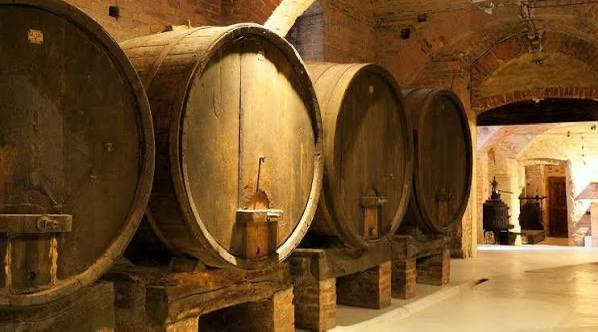

Pétrus Pomerol 2004
Bordeaux, France, 18th century
Pétrus Pomerol is one of the most celebrated and prestigious wines from the Bordeaux region of France.
Located in the small appellation of Pomerol on Bordeaux’s Right Bank, the estate covers about 11.5 hectares,
planted mostly with Merlot grapes. The vineyard’s unique blue clay soil gives the wine its remarkable
depth, richness, and aging potential.
The estate began gaining fame in the mid-20th century, particularly under the guidance of Jean-Pierre Moueix,
who helped establish Pétrus as a symbol of luxury and excellence. Today,
Pétrus is produced in very limited quantities and is considered one of the most sought-after and expensive wines in the world.
